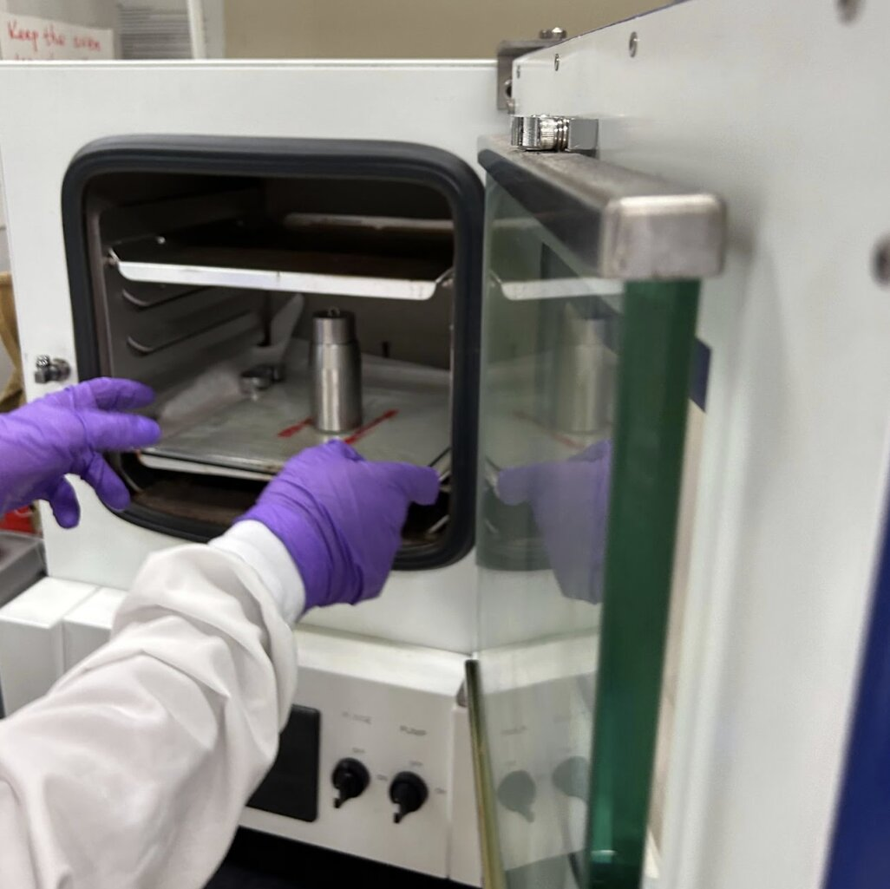
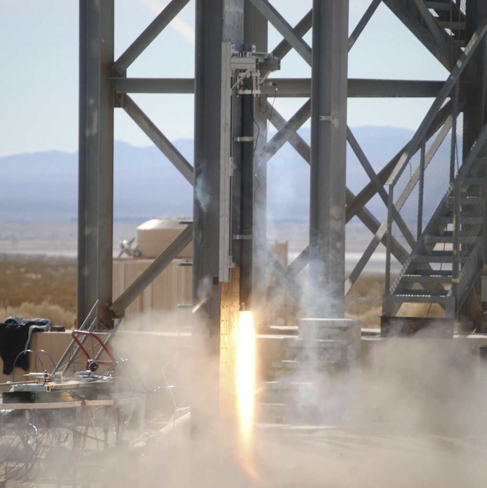
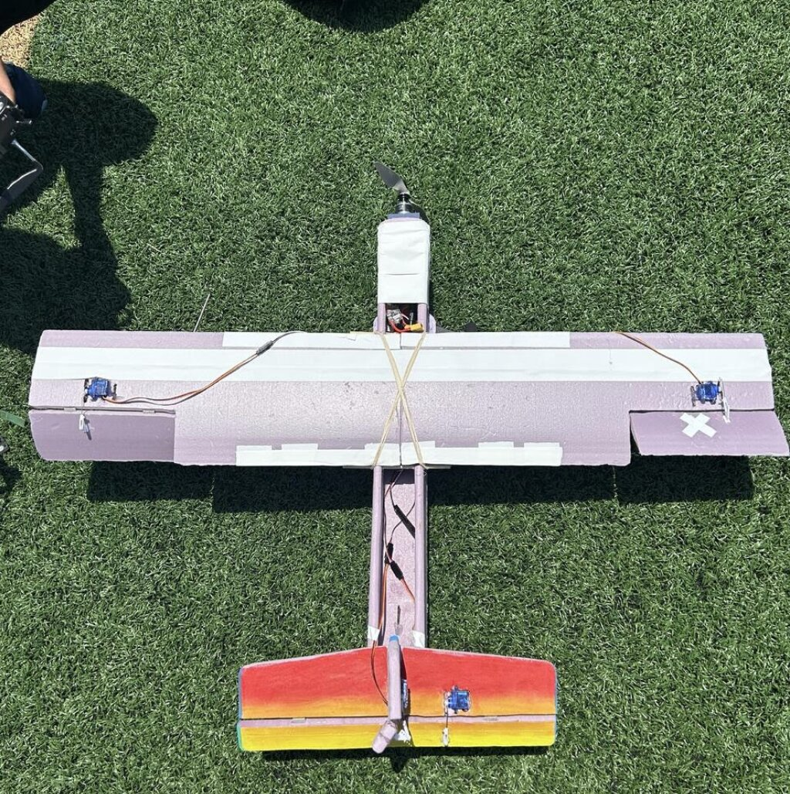
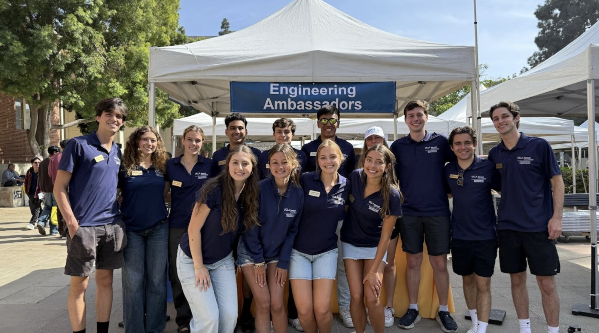
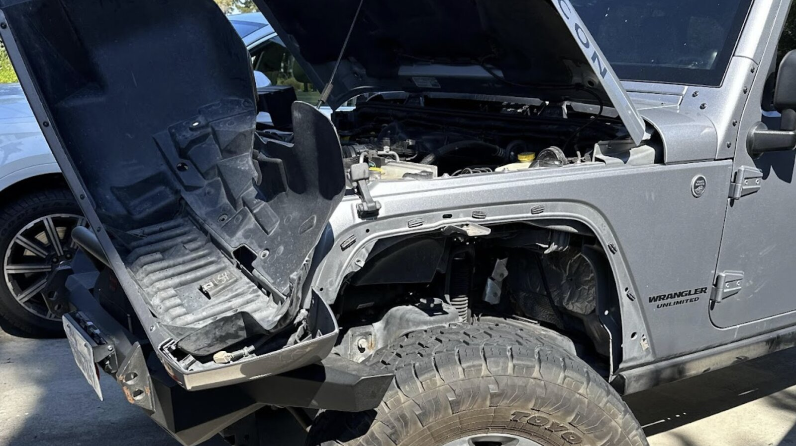

Aerospace Engineering Student — Builder
Hi! I'm Kyle, a third-year Aerospace Engineering student at UCLA with a passion for hands-on design, fabrication, and applied research. This past summer, I worked as an undergraduate research assistant in the Cai Group at UC San Diego, developing hydrogel-based nanoporous membranes to improve thin-film boiling performance. At UCLA, I'm an active member of Rocket Project, where I contribute to the design and testing of propulsion systems on the Prometheus team, and I led a team that designed, built, and flew a remote-controlled aircraft from scratch.
I recently returned from a study abroad semester at Lund University in Sweden, where I expanded my academic perspective and collaborated within an international engineering environment. Outside of class, I've built a motorbike, refurbished bicycles, and designed and fabricated custom furniture.
I'm currently seeking internships where I can contribute to cutting-edge aerospace, propulsion, and mechanical design work.




